Note: on my website many of the
pictures can not be seen! They are of course present in the
catalogue;
contact me if you want to purchase the catalogue.
The Senf brothers (Emil Louis Richard and Wilhelm August Louis) printed a journal, the 'Illustrierten Briefmarken Journal', in Leipzig, Germany. They added 'Kunst-Beigaben' or 'art supplements' to each issue of his journal. These forgeries always had the overprint "Facsimile" or "FACSIMILE", "Falsch" or "FALSCH" included in the design. These forgeries also seem to have been sold directly to collectors (most of them with similar overprints indicating they were forgeries). The period in which they were produced was from about 1870 to 1890.
On http://www.klassische-briefmarken.de/ibj.htm the folllowing
text can be found:
"Das Illustrierte Briefmarken - Journal ( abgekürzt
I-B-J ) erschien von 1874 an unter dem Dache einer der größten
Briefmarkenhandlungen Deutschlands , der Fa. Gebr. Senf in
Leipzig - welche übrigens auch die berühmten Schaubekalben
heraus gaben - Die Auflage, Anfangs gering wuchs um die
Jahrhundertwende 1900 auf über 20.000 Exemplare und war damit
die größte Fachzeitschrift im Bereich der Philatelie in
Deutschland. Sie erschien bis zum zweiten Weltkrieg."
From the above text we can deduce that the first 'Illustrirtem Briefmarken Journal' (where 'Illustrirtem' is sometimes spelled as 'Illustrierte' or 'Illustriertes') appeared first in 1874. The number of magazines printed was limited at first, but rose to over 20,000 around 1900. From this we would deduce that the number of facsimiles distributed must have been considerably less than 20,000.... However, the book 'Philatelic Forgers, their Lives and Works' by V.E.Tyler states that the first facsimiles appeared in 1884 as art supplements. Tyler also says: 'The facsimiles proved, at first, to be very popular, and the Senfs also prepared and sold large quantities of them directly to collectors, thereby becoming the greatest producers of postage stamp facsimiles in the western world'.
Besides a journal, Senf also issued stamp catalogues.
Example of a forgery of Surinam:
Often genuine stamps were also given ('Gratis-Beigabe') with this journal.
A total of 90 stamps (or sometimes sheets) and 4 postal stationary were given with the journal (source: 'Philatelic Forgers Their Lives and Works' by Varro E. Tyler). A list of the Senf 'supplements' (partly obtained thanks to Gerhard Lang):
1884:
1 January Bolivar 10 Pesos red and blue (also
a genuine Bolivia 1871, 5 Centavos black)
15 January British Columbia 1 Dollar green and blue
(also a genuine Porto Rico 1 Mil de Peso red stamp)
1 February Great Britain 1876, 5 Pounds orange (also a
genuine Helgoland 2 1/2 Farthings, 3 Pfennig stamp)
15 February Mexico 1864, 3 Centavos brown (also a genuine?
Argentina 1862, 5 Centavos red stamp)
1 March Russia 7 Rubles black and yellow (also a genuine
Helgoland 1875 2 Farthings and a Bavaria 9 Kreuzer stamp)
15 March, no supplement for this issue?
1 April Mexico 1863, 4 Reales brown (also a Serbia 1869, 20 para
blue stamp)
15 April Peru 1858, 1/2 Peso yellow (green "FALSCH"
overprint) (also a genuine Brunswick 1865, 1 Groschen red stamp)
1 May Bolivia 1869 500 Centavos black (also a genuine official
Italy 20 cent red and a genuine Papal States 1857, 20 cent stamp)
15 May, no supplement for this issue
1 June Newfoundland 1857, 1 Shilling orange (also
a genuine cut from a Helgoland envelope, 3 Farthings- 5 Pfennig
green)
15 June Philippines 1854, 1 R blue (also a genuine Italy
newspaper stamps of 1861, Uno Centesimi grey)
1 July USA Department of State 20 Dollars green and black (also a
genuine Porto Rico 1884, 1/2 Mila de Peso red stamp)
15 July Bolivar 1882 5 Pesos blue and red (also a genuine Belgium
1884, 1 c green stamp)
1 August British Columbia 1868 10 c red and blue (red
"FALSCH" overprint) (also a genuine Portugal 1884 2
Reis black stamp)
15 August Fernando Poo 1868, 20 Cen de Esc brown (also a genuine
North German Confederation stamp of 1869, 1/2 Sch, the Hamburg
issue)
1 September Lubeck 1859, 2 1/2 (2) Schilling brown (misprint)
(also two genuine Porto Rico stamps; 1/2 Mil de Peso orange and 1
Mila de Peso red)
15 September, no supplement for this issue
1 October Saxony 1850 3 Pfennige red (also a genuine Belgium 1884
1 Centime grey stamp)
No 20 (15 October 1884) Philippines 1854, 10 c red (from hereon
the number is indicated on the supplement, here "No
20") (also a genuine Baden Landpost 3 Kreuzer stamp)
No 21 (1 November 1884) Spain 1852 2 Reales red (also a genuine
Spain wartax 1874 5 cent black stamp)
15 November 1884, no supplement for this issue
No 23: (1 December 1884) Spain 1854 Arms, 2 Cs green (red
"FALSCH." overprint) (also a genuine Hamburg 1864 1 1/4
Sch and a Porto Rico 1884 1 Mil.de Peso red stamp)
No 24: (15 December 1884) Great Britain 1 Pound brown (also a
genuine Serbia 1873 2 para black stamp)
1885:
No 1: US newspaper stamp, 24 Dollars
No 2: (20 January 1885) Victoria 1868 5 Shillings blue on red
(also a genuine Austria 1/2 Kr green newspaper stamp)
No 4: (19 February 1885) Virgin Islands 1869 1 Shilling red and
black (also a genuine Greece 1 Lepton brown)
No 5: (6 March 1885) Persia 1882 5 Francs red and black (also a
genuine Hamburg 2 1/2 Schilling green)
No 7: (2 April 1885) India provisional official stamp 1868 4
Annas lilac and green (also a genuine Netherlands 1876 1/2 Cent
and a genuineBrunswick 1865 3 Groschen stamp)
No 9: (1 May 1885) provisional issue of Peru 1883-84 10 Centavos
blue (also a Saxony 1863 3 Pfennige green and a genuine Helgoland
1867 1 Schilling red and green)
No 10: (15 May 1885) Tolima 1879 Cinco Pesos brown (also a
genuine Bavaria 1875 7 Kreuzer blue stamp)
No 12: (19 June 1885) Antioquia 1874 5 Pesos black on red (also a
genuine Italy postage due stamp 1870, 1 Centesimi)
No 13: USA Post Office issue 5 Cents black
No 14: (17 July 1885) Corrientes 1864 (3 Centavos) black on green
No 16: (21 August 1885) Persia 1882 10 Francs black, yellow and
red (also a genuine Bulgaria 1885 1 Stotinki violet and yellow)
No 18: (15 September 1885) Victoria 5 Pounds red (stamp duty)
No 19: (2 October 1885) Fiji 1882 5 Shillings black and red
No 20: (16 October 1885) Victoria Too Late stamp 6 Pence, lilac
and green (also a genuine Portugal 1866 25 Reis red)
No 21: (5 November 1885) Philippines 1863, 1 Real red
No 23: (4 December 1885) Modena B.G.CEN.9. black on lilac (with
large "B.G.")
No 24: (18 December 1885) Wurttemberg 70 Kreuzer violet (also a
genuine Azores 1885 2 Reis black)
1886:
No 1: Mulready envelope of Great Britain, 2 p blue
No 2: (22 January 1886) Philippines 1855, 5 Cuartos red (also a
genuine Spain 1870 1 Mils de Es brown stamp)
No 5: (5 March 1886): Russian post in Turkey 1865 10 c issue
(together with a 'genuine' Helgoland 1 f stamp)
No 7: (3 April 1886) Finland 1885 5 Mark green and red (also a
Luxembourg official stamp of 1882, 1 Centime and a genuine France
1877 1 Centime stamp)
No 9: (8 May 1886) Spain 1853 1 Cuarto bronze (also a genuine
Helgoland 1874 1/4 Schilling green and red)
No 11: (8 June 1886) Finland 1885 10 Mark brown and red (also a
genuine Saxony 1863 1/2 Neugroschen orange stamp)
No 12: (19 June 1886) Columbia 1862 10 c blue (also a genuine
Helgoland 1873 1/4 Schilling green and red)
No 13: (3 july 1886) Helgoland 1879 5 Mark, black, red and green
(also a genuine Rumania 1886 1 1/2 Banu black stamp)
No 14: (24 July 1886) Colombia 1861, 5 Centavos yellos (also a
genuine USA official stamp 3 Cents brown)
No 16: (21 August 1886) Belgian Congo 1886 5 Francs violet (also
a genuine France 1876 1 Franc green and a genuine India 1 Anna
brown official stamp)
No 17: (4 September 1886) Corrientes 1856 Un Real M.C. black on
blue (also a genuine Luxembourg 1882 1 Centime lilac stamp)
No 18: (18 September 1886) Colombia 1886 5 Pesos orange (also a
genuine French Colonies 1881 1 c black on blue stamp)
No 20: (16 October 1886) Spain 1853, 2 r red (also a genuine
Luxembourg 1875 1 Centime brown and a India 1/2 Anna green
official stamp)
No 21: (6 November 1886) Hannover 1861 10 Groschen green (also a
genuine Chile 1877 5 Centavos stamp)
No 24: (18 December 1886) Neuchatel cantonal issue 5 c black and
red
1887:
No 14 (16 July 1887): Parma 1854, 5 c yellow
No 16 (20th August 1887): Greece, Postage due stamp of 1875, 1 D
black and green
No 19 (1st October 1887): Bolivar 1863: 10 c green
No 23 (3 December 1887): Finland, envelope-cut of 1845, 20 k red
No 24 (17 December 1887): Russian post office in the Levant,
1863, 6 k blue
1888:
No 1: Guatemala's first postcard + Tolima 50 c postal
stationery
No 9: (5 May 1888): Guatemala 1 Peso 1872 stamp.
No 13: Colombia Tolima, very large 'Certificacion con Contenido'
No 14: (21 July 1888): British Bechuanaland, 1888, 5 Pounds lilac
and black
No 23: Great Britain, reprint of a Mulready envelope, 1 p black
1889:
No 1: 12$ USA newspaper stamp + three Colombian postal
stationaries.
No 4: (16 February 1889): Surinam, King William, 2G50c green and
orange
No 10: (18 Mai 1889): Curacao, King William, 2G50 c brown and
violet (also a genuine Venezuela 1882 5 Centimes green stamp)
No 12: (15 June 1889): Bhopal, 1888, sheet with 1/4 a green
(reduced to 2/3 of its size)
No 13: (6 July 1889): Russia 1889, 1 R brown and orange (also a
genuine Cuba 1888 2 Mils. de Peso black stamp)
No 16: (17 August 1889) St.Vincent 5 Shillings 1880 stamp.
No 18: (21 September 1889) Sheet of 50 Jhind 1/4 Anna orange (in
2/3 of the actual size) (also a genuine Spain 1878 10 c de Peseta
brown, a genuine Norway 1889 1 Ore brown postage due stamp and a
genuine Spain 1877 15 c de Peseto red wartax stamp)
No 21: (2 November 1889): Salvador 1879 5 centavos; sheetlet of
25 stamps showing all types (also a genuine Wurttemberg 10
Pfennig official stamp and a genuine Helgoland 1873 1 1/2
Schilling green and red stamp)
No 24: (14 December 1889) Corrientes 1861 sheetlet of 8 stamps
showing all types (also a genuine Bularia 1881 stamp, a Helgoland
cut of 10 Pfennig blue and a genuine Porto Rico 1879 25 c. de
Peseto blue stamp)
Senf also made a forgery of the 2 p Mulready envelope of Great Britain.
Examples of Senf forgeries:
(Curacao, 2G50c, with overprint
"FACSIMILE" in violet)
San Salvador: a whole sheet of 5 c blue stamps of the 1879 issue; all types are reproduced. The individual stamps have a red overprint "Facsimile". On top of the sheet is written "Kunstbeigabe":
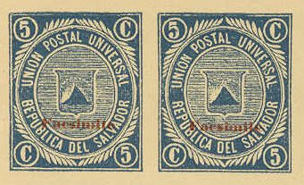
The Tolima postal stationery forgery made by Senf:
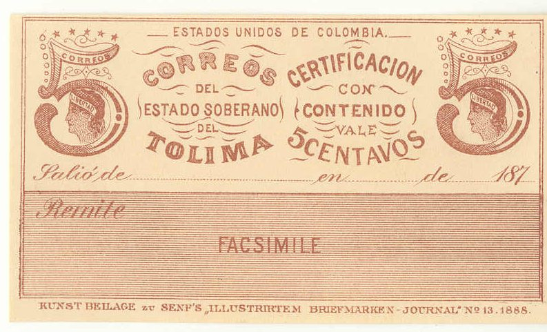
Senf also made a forgery of the three-coloured 10 c and 50 c value postal stationery of Tolima (the forgeries have inscription "FACSIMILE" twice in the 'Remite' section at the bottom.
I've seen the 50 c value with additional inscription "KUNST BEILAGE ZU SENF'S "ILLUSTRIERTEM BRIEFMARKEN- JOURNAL" No 1 1888".
A similar item from Colombia with inscription
"FACSIMILE", probably also made by Senf
An advertisement for these 'Facsimiles' from Senf, where a set of
10 facsimiles are offered for a price of 2 Mark. It includes the
25 c and 50 c 1865 issue, the 50 c 1867 issue, the 50 c 1870
issue for Colombia. Also the 5 c, 10 c
and 50 c of the 1879 issue and the 5 c, 10 c, and 50 c of the
1886 issues of Tolima were included.
The inscription of the above card is:
" Angeregt durch den ausserordentlichen Beifall, den unsere verschiedenen
Facsimiles schwer zu erlangender, bezw. seltener und daher sehr teurer Postwert-
zeichen, besonders die der Amerikanischer Zeitungsmarken in allen Sammlerkreisen
gefunden haben, bringen wir heute eine derartige Serie, die sicherlich die gleich
gunstige Aufnahme finden wird.
Es sind dies
Facsimiles
der
in fast allen Sammlungen ihrer Seltenheit wegen fehlenden, (in Originalen mit
120 Mark bewerteten)
Columbia- und Tolima-
Geldbrief-Vignetten.
der Satz von 10 Stuck besteht aus folgenden Werten:
Columbia
1865. 25 Centavos braun, gelb, blau u. rot
50 "
1867. 50 Centavos schwarz, gelb, blau u. rot
1870. 50 Centavos "
Tolima
1879. 5 Centavos braun
10 " schwarz u. irisfarben
50 " " "
1886. 5 Cts. gelb, 10 Cts. blau u. 50 Cts. rot.
die wir zum Preise von
2 Mark fur den Satz
allen Sammlern gegen vorherige frankierte Einsendung des Betrages ebenfalss
portofrei zu Verfugung stellen.
Auch diese "Facsimiles" sind in gewohnt vorzuglicher Weise ausgefuhtt -
wir gaben bereits im Jahrganga 1888 des "Illustr. Briefm.-Journals mit der
Kunstbeigabe zu No.1 eine Probe davon -; sie durften vielen Sammlern als
billger Ersatz fur die so schwer erhatlbaren Originale hochwillkommen sein.
Wir sehen recht zahlreichen Bestellungen, die sofortige Erledigung finden
werden, entgegen und zeichnen
hochachtend
Gebruder Senf in Leipzig."
First postcard of Guatamala given with No 1 of 1888 of the
'Illustrirtem Briefmarken - Journal'
A forgery of the 1 D postage due stamp of Greece:
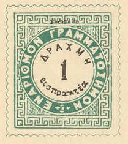
A square cut forgery of the 1845 envelope of Finland:
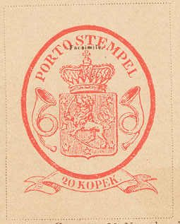
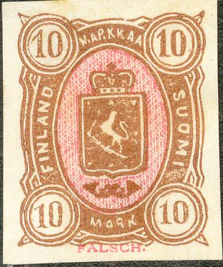
(1875 5 M and 10 M forgeries)
Senf also made a forgery of the imperforate 1 R value of Russia of 1889. This forgery was distributed with No 13 (6 July 1889, thus long before the imperforate stamps of 1915 were issued), the text 'Falsch.' is printed in orange on top of the stamp:
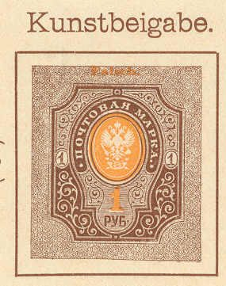
Forgery of Russian Levant and forgery from Russian postal stationery (stamped envelope) of 1845 5 k blue:
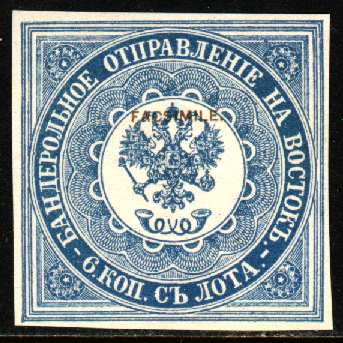
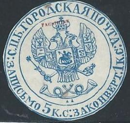
Russian Levant (Russian post offices in Turkey) 1865 10 pa brown
and blue ("FALSCH" written at the bottom)
A Parma 5 c yellow 1854 forgery:
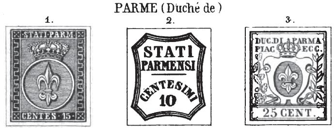
Senf made a forgery of the 5 c yellow stamp (also orange?) from the first issue of Parma. This forgery was distributed with stamp journal the 'Illustrierten Briefmarken Journal', No 14 (16 July 1887) as an 'art supplement' or 'Kunstbeigabe'. The forgery always bears the word 'Facsimile' on top. Note the strange "S"s. The second image shows a stamp with the word 'Facsimile' first having been partly erased and then a 'cancel' was applied to the area to hide this word. Apperently, Senf copied the design from an earlier Moens illustration from Les Timbres Poste Illustre of 1864 (by erasing the "1" to make it a 5 c instead of a 15 c).
Bolivar 1863 10 c green forgery:

(With overprint "Facsimile")
All 8 types of the Corrientes stamps (with red 'FACSIMILE' overprint):
I've also seen another Corrientes forgery made by Senf, apparently not any of the above types, without the 'FACSIMILE' overprint. He also seems to have forged the 1 r black on blue stamp of 1856.
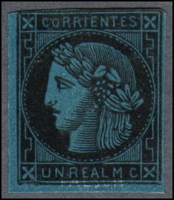
Corrientes Senf forgery with 'FALSCH' written in the blue
background at the bottom.
Naples Trinacria forgery (1/2 T blue, produced in 1884) and a forgery of the 1/2 T cross :
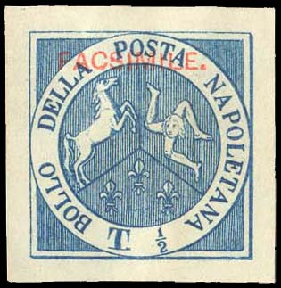 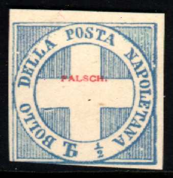
(With overprint 'FACSIMILE.' and 'FALSCH')
Senf forgeries of the Papal States:

(1 Sc Senf forgery with oveprint 'FALSCH.')

8 b Senf forgery
Senf made forgeries of the values 1/2 , 1 b, 2 b, 3 b, 4 b, 5 b, 7 b (two subtypes), 8 b, 1 Sc, 3 c, 5 c, 10 c, 20 c, 40 c and 80 c of the Papal States.
Persia (Iran):
In the above two stamps of Persia the inscription "FALSCH" is added in the bottom part of the stamp. The second mage was obtained with permission from the Forgeries idenfication site of Bill Claghorn (http://geocities.com/claghorn1p/).
A Senf forgery of Mexico:

The Senf brothers also made forgeries of the newspaper stamps of the United States. The word "FALSCH" (=forged in German) is incorporated in the design. It seems that no 1 c was forged, but instead an advertisement label was made. Four of these stamps were distributed in the 'Illustrierten Briefmarken Journal' (the Dollar values), other values were sold to collectors (another 23 stamps; 19 of the 1875 issue and 3 of the 1865 issue). These forgeries can be found in the cd containing Volume 1.
Senf forgeries of Peru:


Senf forgeries of Colombia:

(With overprint 'FALSCH')

Columbia 1879 25 c green (overprinted "FACSIMILE"), in
the second image somebody has tried to removed this overprint and
has applied a forged cancel.
Forgery of the first issue of Uruguay (60 c) with "Facsimile." incorporated in the design:

('Diligencia' forgery of Uruguay)

Left image obtained from http://nigelgooding.co.uk/

Spain 1853 1 c brown 'CORREO INTERIOR'
arms issue (with 'FALSCH' overprint)
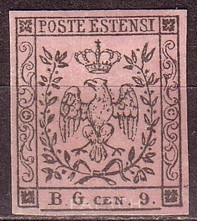
Apparently, Senf copied the design from an earlier Moens illustration from Les Timbres Poste
Illustre of 1864 (plate 14, see image above).
Afghanistan 1871/72 1/2 r brown, 1 r brown (overprint "FACSIMILE")


The first forgery is made by Senf, I presume the other two were
also made by him.
Bolivar 5 P and 10 P 1882 issues:

(Senf forgeries of Bolivar?)
Possible Senf forgeries of Guatemala?

(This forgery has the word "FACSIMILE" incorporated in
the design below the shield)
In the next forgeries, the word "FACSIMILE" of the above forgery, has been coloured in (but is still faintly visible):

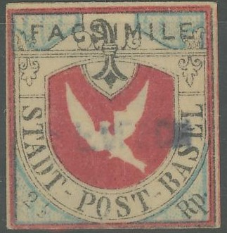
Basel Dove 1845 (overprint "FACSIMILE"). The left
"FACSIMILE" overprint is partly erased, when trying to
create a 'genuine' stamp, but the "S" of this word can
still be seen.

Neuchatel Cantonal issue (Switzerland) 5 c black and red forgery
with blue "FALSCH" overprint.
Senf forgeries of the 10 Cs and 1 R values (1 R value obtained
thanks to Nigel Gooding). These forgeries do not have any
indication that they are forgeries.
Other Senf forgeries, of which I don't have
pictures yet:
Belgian Congo 1886 5 F violet (with 'Falsch' overprint, also
without this overprint?)
Columbia 1861 5 c yellow (overprinted 'Falsch')
Columbia 1886 5 P brown (with overprint 'FALSCH')
Spain 1853 2 r red Queen Isabella (with overprint 'FALSCH')
If anybody possesses pictures of any of these forgeries, please contact me!
More Senf forgeries can be found on the cd with Volume 1.

Postal forgery of the 6 c value of the 1989 issue of Cuba . The inscription 'CUBA - 1898 y 99' is
very badly done when compared to a genuine stamp. Image obtained
from:
http://www.philat.com/FIL/1890-1898/Cuba--King%20Alfonso%20XIII%20Issues%201898--6%20cents--Postal%20Forgery.pdf
This postal forgery was pasted on a letter, together with two
genuine stamps (2 c and 3 c) and adressed to Gebruder Senf in
Leipzig (picture also obtained from the above mentioned website).
Therefore I don't know if this forgery was made with some
philatelic intention. The fact that it was send to Senf makes it
at least 'suspicious'.
Stamp forgeries - Timbres-poste, faux - Briefmarken Fälschungen


{kind=link}
{kind=link}
{kind=link}
{kind=link}
{kind=link}
{kind=link}
{kind=link}